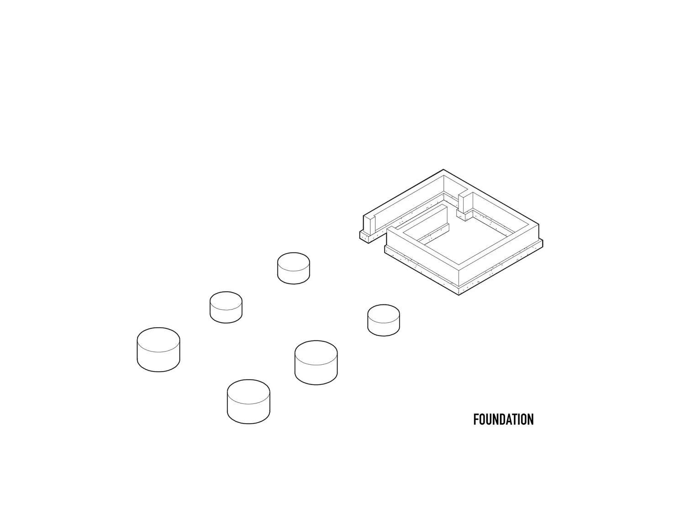
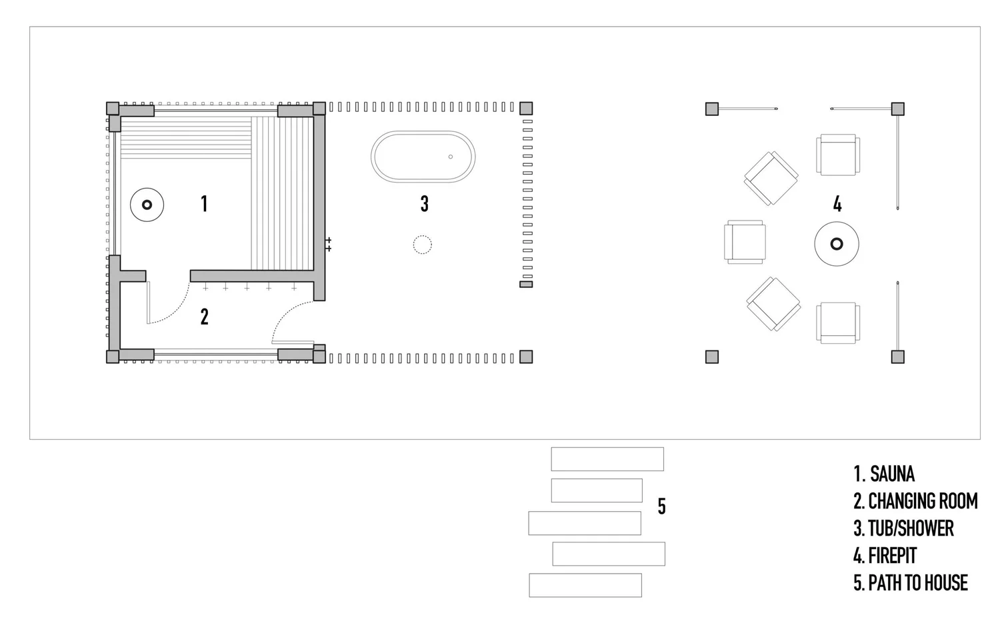

Design Studies
Architectural Design Diagram
A visual design study used to communicate architectural ideas and illustrate aspects of the design development process.
View Full Drawing ↗Architectural design involves more than the finished building. Drawings and plans help communicate spatial relationships, organize spaces, and develop ideas into a clearer design direction. Explore this selection of floor plans, foundation layouts and architectural design studies.
A visual design study used to communicate architectural ideas and illustrate aspects of the design development process.
View Full Drawing ↗
A foundation layout drawing associated with a modern sauna design in Tacoma.
View Full Drawing ↗
A floor plan showing the spatial organization and layout of the modern sauna project.
View Full Drawing ↗
A residential planning drawing illustrating the arrangement of the main living spaces.
View Full Drawing ↗
A lower-level planning drawing complementing the main floor and showing the arrangement of additional spaces.
View Full Drawing ↗Return to the portfolio to explore residential architecture and design.
Back to Portfolio